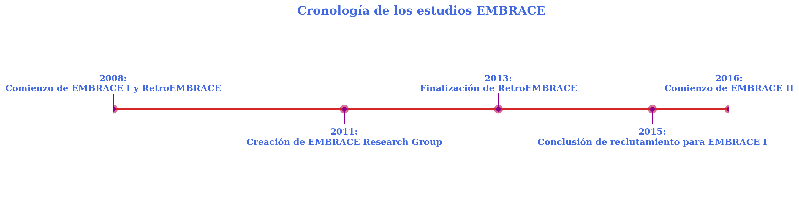
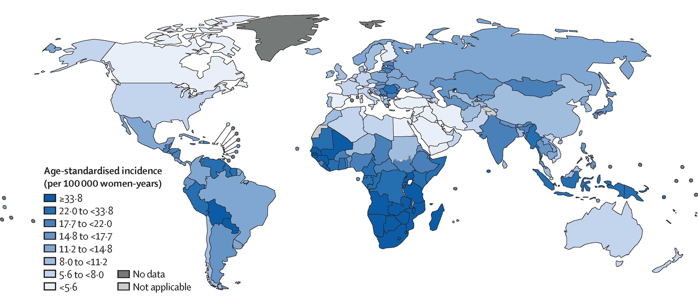
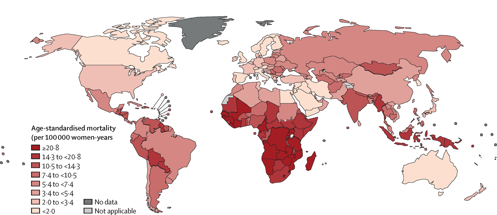
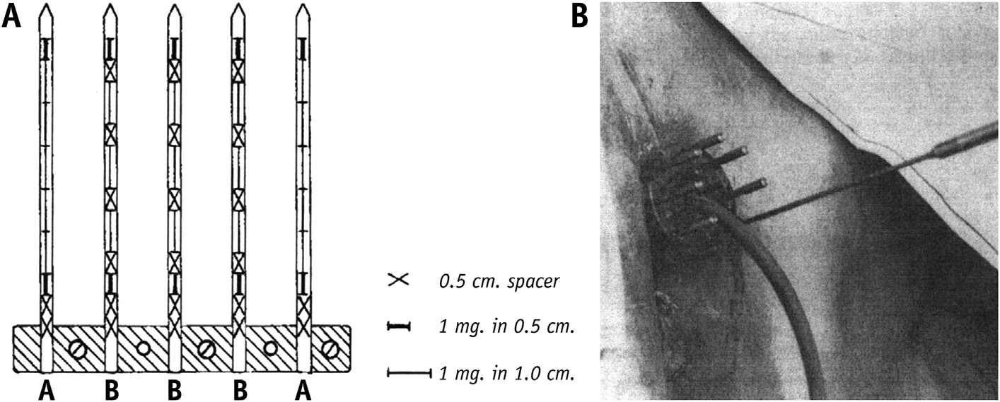
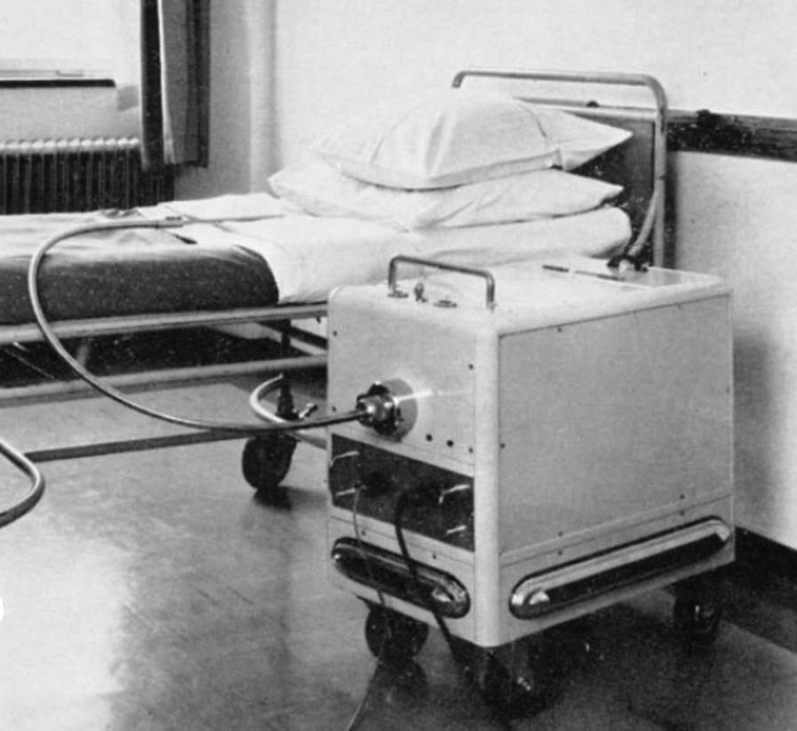
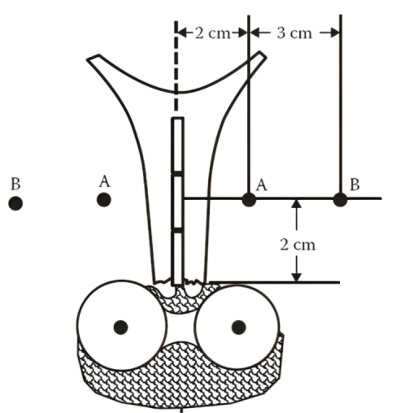
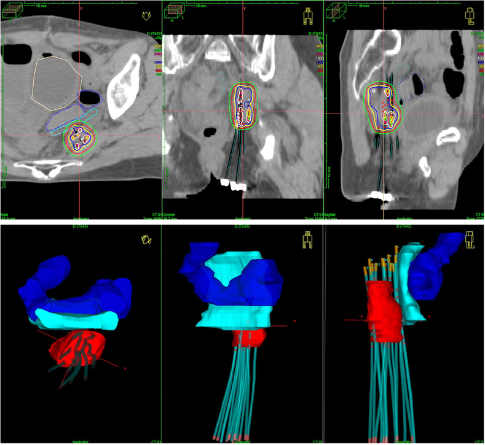
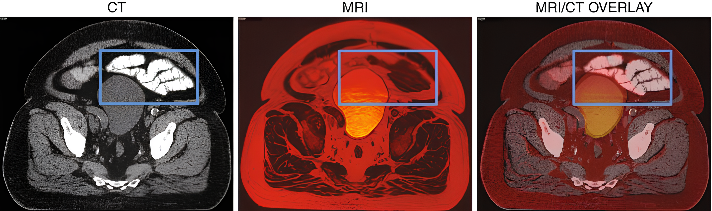
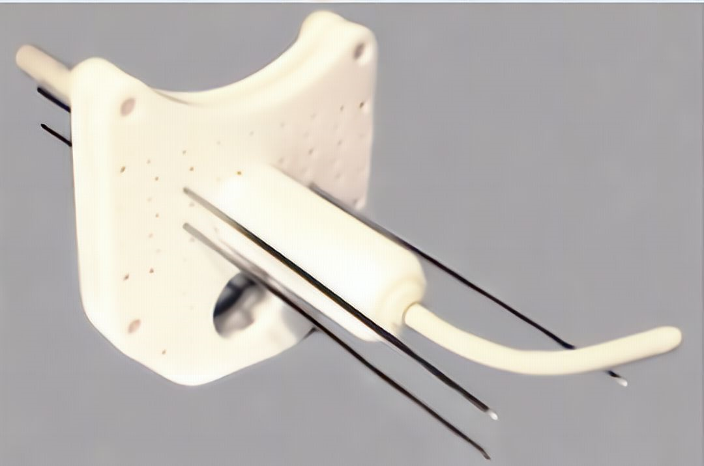

1 Introducción
1.1 Braquiterapia ginecológica
La braquiterapia (BT) es una técnica de radioterapia en la que se colocan fuentes radiactivas cerca o directamente dentro de la zona de tratamiento. Las fuentes pueden insertarse en cavidades corporales, colocarse en la superficie del área a tratar o introducirse en los tejidos mediante técnicas intersticiales. El objetivo de la BT es garantizar la administración precisa y segura de la dosis de radiación prescrita en la zona objetivo, minimizando al mismo tiempo las dosis innecesarias en los tejidos sanos circundantes. La BT se utiliza sobre todo para tratar diversos tipos de cáncer y ciertas enfermedades benignas, como la hiperplasia benigna de próstata.
El primer caso de tratamiento de tumores ginecológicos a través del uso de fuentes radiactivas del que se tiene constancia fue en 1903, cuando se utilizó el radio como isótopo de tratamiento para tratar tumores ginecológicos1. Este uso temprano de la BT se produjo tras el descubrimiento de la radiactividad por Henri Becquerel. Desde el primer momento se toma conciencia del reto que supone el conocimiento de determinar la actividad y la disposición de la fuente y la importancia de ambos factores. Se realizaron observaciones clínicas para investigar la eficacia de la BT y se desarrollaron normas y reglamentos para la estandarizarización los procedimientos de radioterapia2–4.
1.1.1 Ventajas de la BT frente a la radioterapia de haces externos (EBRT)
Por definición, la BT aporta directamente la dosis de radiación deseada al objetivo utilizando fuentes radiactivas selladas colocadas dentro o en las inmediaciones del tumor. Cabe señalar que esta definición se ha revisado ligeramente al incluir las fuentes de BT electrónica como alternativa a las fuentes radiactivas selladas.
En términos generales, la BT aprovecha el hecho de que las fuentes están conectadas directamente al volumen diana y se mueven con él cuando se mueve5,6 . La variación en el paciente durante el tratamiento es mínima. En comparación con las técnicas de haz externo, la otra ventaja es que el objetivo recibe una dosis suficientemente alta. Al mismo tiempo, la ley del cuadrado inverso garantiza que la dosis para el tejido normal circundante (es decir, el órgano en riesgo) se reduce considerablemente incluso en las proximidades de los volúmenes que se pretenden cubrir con la dosis prescrita.
1.1.2 Inconvenientes de BT frente a EBRT
Según Hoskin et al.7 Los inconvenientes de la BT comparada con la EBRT incluyen:
Procedimiento invasivo: La BT requiere la colocación de aplicadores o fuentes de radiación mediante un procedimiento invasivo, excepto en el caso de los moldes superficiales utilizados para tumores cutáneos. Esto puede aumentar la complejidad y el coste del procedimiento, ya que requiere algún tipo de anestesia y acceso a un quirófano.
Acceso limitado: La BT está limitada por las zonas de fácil acceso para la colocación de la fuente. Los tumores superficiales y las cavidades corporales pueden tratarse fácilmente, mientras que los órganos internos, especialmente los del abdomen, presentan dificultades que aún deben superarse en la práctica rutinaria.
Variabilidad del médico: La BT está sujeta a incertidumbres clínicas, siendo la mayor la variabilidad en el contorno de los volúmenes objetivo y los órganos en riesgo entre los clínicos. Esta variabilidad puede afectar a la precisión y eficacia del tratamiento.
1.1.3 Tipos de tumores ginecológicos
Los tumores ginecológicos son cánceres que se desarrollan en el aparato reproductor femenino. Son varios los tipos de cáncer ginecológico que pueden aparecer como el de cuello de útero, endometrio (uterino), ovario, vulva, vagina y trompas de Falopio.
Cáncer de cuello uterino: También llamado de cérvix, es el cáncer ginecológico más tratado en todo el mundo. La incidencia del cáncer de cérvix es alta en los países en vías de desarrollo y en partes de Asia y África8. El cáncer de cuello uterino es un problema importante en todo el mundo y es el tercer cáncer más frecuente en mujeres (figura 5.1 (b) tomado de Singh et al.9). La prevalencia de la infección por el virus del papiloma humano (HPV) está estrechamente relacionada con la incidencia del cáncer cervicouterino. En adelante y salvo se diga lo contrario, el texto se centrará en este tipo de cáncer.
Cáncer de endometrio (uterino): La BT también puede utilizarse como opción de tratamiento para el cáncer de endometrio. Puede emplearse como tratamiento primario o como terapia adyuvante tras la cirugía. El objetivo de la BT endometrial es administrar una dosis elevada de radiación al lecho tumoral y reducir el riesgo de recidiva local.
Cáncer de ovario: Los cánceres de ovario se tratan principalmente con resección quirúrgica seguida de quimioterapia. En casos seleccionados, la BT se ha utilizado para tumores recurrentes en el fondo vaginal. El tratamiento con BT para el cáncer de ovario puede proporcionar un control local práctico en estas situaciones específicas.
Cáncer de vulva: Los cánceres de vulva son tumores poco frecuentes que representan un pequeño porcentaje de las neoplasias ginecológicas. La BT puede considerarse en el tratamiento de los cánceres de vulva, especialmente en los casos localmente avanzados que afectan a los ganglios linfáticos inguinales. El objetivo de la terapia es administrar una alta dosis de radiación al tumor minimizando el daño a los tejidos sanos circundantes.
Cáncer de vagina: Los cánceres vaginales pueden ser primarios o metastásicos de otras localizaciones ginecológicas. Cuando se producen tumores vaginales primarios, la BT es una de las opciones de tratamiento. La aplicación de la BT en el cáncer vaginal consiste en irradiar selectivamente el tumor, especialmente en el tercio superior de la vagina. La terapia puede proporcionar un control local práctico para los tumores vaginales primarios.


1.1.4 Evolución de los sistemas de implantación
Su origen se remonta a comienzos del siglo XX, cuando se introdujeron por primera vez fuentes radiactivas implantadas manualmente en los tumores10. En aquel entonces, este enfoque implicaba una exposición no deseada a la radiación para los médicos y otros profesionales de la salud. Sin embargo, a mediados del siglo XX, se comenzaron a utilizar técnicas de carga diferida (after-loaders)11 (Figura 1.2 (a)), en las cuales las agujas huecas o los aplicadores se colocan en el volumen del tumor insertando posteriormente las fuentes radiactivas en dichos dispositivos, con lo que la exposición a la radiación del personal sanitario se redujo de manera importante.


La llegada de los dispositivos de carga diferida remotos (Figura 1.2 (b)) (RAL) a finales del siglo XX supuso avances significativos en la práctica de la BT. Dichos dispositivos remotos permitían la colocación de fuentes radiactivas a distancia en agujas o aplicadores, reduciendo todavía más las exposiciones a la radiación. Esta última innovación permitió el uso de fuentes de alta actividad para aplicaciones de alta tasa de dosis (HDR) y tasa de dosis pulsada (PDR). La BT de alta tasa de dosis mediante RAL se generalizó en la segunda mitad de los años ochenta del siglo XX con la aparición de ordenadores con una mayor capacidad de cálculo y memoria que a su vez posibilitaron la aparición de los primeros sistemas de planificación (TPS).
1.1.5 EL Sistema de Manchester
El sistema de Manchester se desarrolló para la planificación de los tratamientos de cáncer de cérvix en los años 30 del siglo XX1,12,13. Su objetivo era estandarizar la dosimetría y el tratamiento en diferentes pacientes mediante la definición de puntos de referencia específicos.
En el Sistema Manchester, los dos puntos de referencia utilizados para la dosimetría son el Punto A y el Punto B. El punto A corresponde al triángulo paracervical en el borde medial del ligamento ancho, donde los vasos uterinos cruzan el uréter. Geométricamente, este punto se definió trazando una línea que uniera los bordes superiores de los ovoides vaginales y midiendo 2 cm en dirección superior a lo largo del tándem y luego 2 cm en dirección perpendicular al tándem.
El punto B, otro punto utilizado en el Sistema de Manchester, representa los ganglios pélvicos. Originalmente se definió a 5 cm lateralmente desde la línea media, al mismo nivel que el Punto A. Sin embargo, es importante señalar que la posición real de los ganglios pélvicos puede variar de un paciente a otro (Figura 1.3).
El sistema de Manchester consiste en una combinación de tubos intrauterinos y ovoides, que se insertan en la vagina y el útero de la paciente14. La geometría de los aplicadores está diseñada de tal manera que el punto A recibe la misma dosis, independientemente de la combinación específica de tubos intrauterinos y ovoides utilizados. Esta característica hizo que el sistema de Manchester y sus aplicadores fueran más populares que los disponibles anteriormente y formó la base de los métodos modernos de aplicación de BT intracavitaria y especificación de dosis.

A diferencia de los sistemas aplicadores anteriores, los aplicadores Manchester son fijos y rígidos, lo que reduce la posibilidad de que el aplicador se deslice y cambie la distribución espacial de la dosis. El uso de aplicadores precargados y de carga diferida en el sistema de Manchester también ayudó a superar las limitaciones asociadas con el uso de aplicadores de radio peligrosos y tiempos de tratamiento prolongados.
El uso histórico del punto A ha sido casi universal, salvo en la escuela francesa. Hay dos razones principales para este uso generalizado. En primer lugar, el punto A puede delimitar o no la extensión lateral de los parametrios, un aspecto esencial de la BT ginecológica. En segundo lugar, el punto A puede definirse fácilmente incluso en las prácticas clínicas básicas, lo que permite comparar los resultados clínicos entre distintos centros. El punto A (y B) ganó popularidad en la primera época de la BT ginecológica debido a las limitaciones técnicas de entonces, hasta que aparecieron ordenadores capaces de trabajar con mapas de dosis.
1.1.6 La introducción de la imagen 3D
Antes de la aparición de las imágenes en 3D, los sistemas de planificación y dosimetría del tratamiento de BT se basaban en la dosimetría de película plana y las técnicas de imágenes en 2D. El uso del punto A y el punto B como puntos de referencia en BT ginecológica obtuvo una amplia aceptación debido a su simplicidad y compatibilidad entre diferentes instalaciones. Sin embargo, las limitaciones de estas primeras técnicas se hicieron evidentes, ya que proporcionaban información y precisiones limitadas para predecir los resultados del tratamiento15.
El uso de imágenes en 3D para la planificación de la BT se introdujo por primera vez a mediados de la década de 1990 (figura 1.4), al generalizarse en los países desarrollados la planificación de tratamientos de radioterapia de haz externo (EBRT) en 3D sobre imágenes de tomografía computarizada (CT). Esto permitió realizar planes de tratamiento basados en volúmenes de manera relativamente rápida y sencilla. A raíz de esta innovación los avances en EBRT aparecieron los primeros TPSs de BT que integraban módulos de imágenes 3D. Se observó que estas secuencias tomográficas proporcionan más información anatómica y permiten evaluar mejor la definición del tumor, su relación con la anatomía circundante y los órganos en riesgo, así como la colocación de los aplicadores o catéteres de BT.

Inicialmente, las imágenes de CT proporcionaron mejores cálculos de dosis dentro de los tumores y los órganos de riesgo en comparación con la planificación de tratamiento mediante dos placas ortogonales de rayos X basada en película. Sin embargo, seguía teniendo limitaciones, como la sobre-estimación de los volúmenes tumorales16. Dicha sobre-estimación está relacionada con la limitación del CT en la definición de los tejidos. Esa es precisamente una de las ventajas que ofrece la imagen por resonancia magnética nuclear (MRI). Otra de las ventajas de la mejor definición de los tejidos es la de permitir una planificación adaptativa, ya que el tumor retrocede con cada fracción administrada17.
La introducción de la MRI en BT es a comienzos del siglo XXI. En 2005, el Groupe Europeen de Curietherapie y la Sociedad Europea de Radioterapia y Oncología (GEC-ESTRO) publicaron unas directrices para la planificación óptima de los volúmenes objetivo de BT guiada por MRI18. Estas directrices destacaban la importancia de la MRI para mejorar el control local y reducir la toxicidad del tejido sano. Estudios y ensayos posteriores destacaron aún más los beneficios de la BT guiada por MRI. El ensayo francés STIC de 201219 demostró que la BT tridimensional guiada por MRI, era factible y segura en la práctica rutinaria, con un mejor control local y una menor toxicidad en comparación con la 2D. El American Brachytherapy Task Group informó en 201720 de que la BT guiada por MRI era más eficaz y segura que las prescripciones de dosis tradicionales de punto A.
A pesar de estas evidencias, se hizo patente que era necesaria una adopción más rápida de la planificación basada en MRI en la práctica de la BT ginecológica. Un estudio publicado en 201021, descubrió que solo el 2% de los oncólogos radioterápicos utilizaban la planificación basada en MRI, mientras que la mayoría seguía prescribiendo en el punto A y registrando la dosis según las prescripciones del punto de dosis de la ICRU3822.
1.2 Imagen en BT de cérvix
En la BT de cáncer de cérvix actual se utilizan diferentes tipos de modalidades de imagen 3D para guiar y planificar el tratamiento. Dichas modalidades son ultrasonidos, tomografía por emisión de positrones, tomografía computarizada e imagen por resonancia magnética nuclear.
1.2.1 Ultrasonidos
La ecografía por ultrasonidos es una modalidad de imagen que utiliza ondas sonoras de alta frecuencia para crear imágenes en tiempo real del área de interés. La ecografía puede utilizarse en BT cervical para guiar la inserción de los aplicadores intracavitarios y garantizar una colocación precisa. La ecografía es beneficiosa en los casos en que el canal endocervical está estrechado u obliterado, ya que permite una mejor visualización y evita la perforación durante el procedimiento. Una ventaja añadida es que es una modalidad de imagen que no utiliza radiaciones ionizantes, en contraposición a los sistemas de imágenes descritos en las secciones 1.2.2 .
El médico puede navegar por el cuello uterino utilizando la guía ecográfica y colocar con precisión los aplicadores, garantizando una geometría óptima del implante. Esto es crucial, ya que se ha demostrado que los implantes técnicamente buenos se correlacionan con un mejor control local y, potencialmente, con mejores resultados de supervivencia en pacientes con cáncer de cuello uterino. Además, la ecografía puede ayudar a identificar cualquier anomalía o patología que pueda afectar al tratamiento de BT23.
Por diversos motivos, la ecografía aún no se ha adoptado de forma generalizada para identificar estructuras como el cuello uterino y el útero en la BT ginecológica24. En primer lugar, aunque los primeros estudios sugirieron que se podían realizar mediciones mediante ecografía para guiar la planificación del cáncer de endometrio, estos protocolos no se aplicaron de forma generalizada y no han sido adoptados en el caso de cáncer de cérvix25. En segundo lugar, el uso de la ecografía en la planificación de la BT se ha visto obstaculizado por problemas como la mala resolución de la imagen, la reproducibilidad inadecuada y la visualización sub-óptima de estructuras críticas26. Por último, existe una curva de aprendizaje asociada a la adquisición, orientación e interpretación de imágenes, y la ecografía bidimensional sólo visualiza una vista limitada de la región de interés. Por todo ello, aunque la ecografía es una modalidad de imagen prometedora, todavía no se ha extendido como estándar de imagen en BT ginecológica.
1.2.2 Tomografía por emisión de positrones (PET/CT)
La imagen PET/CT con FDG (18F-fluorodesoxiglucosa) es una herramienta valiosa para evaluar la extensión del cáncer ginecológico y la respuesta al tratamiento. La FDG es un radiotrazador que es captado por células metabólicamente activas, como las cancerosas, lo que permite visualizar y cuantificar el metabolismo de la glucosa en los tejidos. La combinación de PET y CT en una única modalidad de imagen proporciona información tanto funcional como anatómica, permitiendo una localización y caracterización más precisa de los tumores.
En el contexto de los cánceres ginecológicos, la imagen PET/CT con FDG se ha utilizado con diversos fines. Se utiliza comúnmente para la estadificación inicial y la evaluación de la extensión de la enfermedad en pacientes con neoplasias ginecológicas, incluidos los cánceres de cuello uterino, endometrio, ovario y vulva. La PET/TC puede ayudar a identificar tumores primarios, detectar la afectación de ganglios linfáticos regionales y evaluar la presencia de metástasis a distancia27. Es especialmente útil para detectar la enfermedad metastásica a distancia, que es crucial para determinar las estrategias de tratamiento adecuadas y el pronóstico.
Además, el PET/TC con FDG también puede utilizarse para evaluar la respuesta al tratamiento en cánceres ginecológicos. Al comparar las exploraciones PET/CT previas y posteriores al tratamiento, los cambios en la captación de FDG pueden indicar la eficacia de la terapia y ayudar a orientar las decisiones terapéuticas28. Una disminución de la captación de FDG después del tratamiento sugiere una respuesta favorable, mientras que una captación persistente o aumentada puede indicar enfermedad residual o progresiva. El PET/CT puede proporcionar información valiosa para monitorizar la respuesta al tratamiento y ajustar los planes de tratamiento en consecuencia.
Sin embargo, es importante señalar que las imágenes PET/TC con FDG no son válidas para la BT, que es una modalidad de tratamiento común para los cánceres ginecológicos. El uso de PET/TC para la planificación de la BT es limitado debido a varios factores.
En primer lugar, las imágenes PET/CT con FDG tienen limitaciones para visualizar y delinear con precisión el tumor y los tejidos circundantes en la pelvis, que es la región de interés para la BT ginecológica29. Los artefactos de movimiento causados por la respiración o el peristaltismo gástrico pueden afectar a la calidad de las imágenes de PET/CT, lo que reduce la precisión en la delineación del tumor. Además, el tiempo de examen requerido para PET/CT es más largo en comparación con otras modalidades de imagen, lo que puede no ser factible para la naturaleza sensible al tiempo de los procedimientos de BT.
En segundo lugar, el uso de PET/CT para la planificación de la BT puede no proporcionar la suficiente resolución espacial y detalle anatómico necesarios para la colocación precisa de aplicadores y agujas29. La BT requiere una localización precisa del tumor y las estructuras circundantes para garantizar una administración óptima de la radiación y minimizar el daño a los tejidos sanos. Aunque PET/CT puede proporcionar información funcional sobre el metabolismo tumoral, es posible que no proporcione la información anatómica necesaria para la reconstrucción del aplicador y la planificación del tratamiento29.
1.2.3 Tomografía Computarizada
El CT es una modalidad de imagen ampliamente utilizada en BT ginecológica para el tratamiento de tumores cervicales. El CT proporciona información anatómica detallada mediante el uso de rayos X para crear imágenes transversales del cuerpo. Desempeña un papel crucial en la planificación del tratamiento, la segmentación del volumen objetivo y el cálculo de la dosis en los procedimientos de BT.
En BT ginecológica, el CT se utiliza para visualizar la región pélvica y definir con precisión el tumor y las estructuras circundantes. Las imágenes de CT ayudan a determinar el tamaño, la ubicación y la extensión del tumor, así como a identificar cualquier afectación de los ganglios linfáticos o metástasis30. La información obtenida mediante CT es esencial para la planificación del tratamiento, ya que guía la colocación de aplicadores y agujas31.
El CT puede utilizarse en la BT cervical para proporcionar información valiosa para la planificación del tratamiento y la optimización de la dosis a los órganos de riesgo. Su uso está muy extendido y los oncólogos radioterápicos están familiarizados con su interpretación. La TC permite delinear los órganos de riesgo (OAR) de forma comparable a la MRI32 , proporcionando información útil como la posición de la sonda intrauterina, el grosor del tabique recto-vaginal y la relación entre la vejiga/rectosigmoide y el aplicador.
Sin embargo, las imágenes de CT tienen ciertas limitaciones cuando se trata de tratar tumores cervicales en BT. Como se mencionó en la sección 1.1.6, una limitación es el contraste relativamente bajo de los tejidos blandos en comparación con otras modalidades de imagen, como la resonancia magnética. Esto puede dificultar la delimitación precisa del tumor y las estructuras circundantes, especialmente en casos de tumores pequeños o cuando el tumor es isodenso con el tejido cervical normal30.
Otra limitación de las imágenes de TC en BT es la presencia de artefactos metálicos causados por los aplicadores metálicos utilizados en el procedimiento. Estos artefactos pueden oscurecer los tejidos blandos circundantes y afectar a la precisión de las imágenes de TC, aunque se han desarrollado técnicas de reducción de artefactos metálicos para mitigar este problema y mejorar la calidad de las imágenes de CT en presencia de implantes metálicos.
1.2.4 Resonancia Magnética Nuclear
La MRI es una sofisticada técnica médica de diagnóstico por imagen. A diferencia de los rayos X, que emplean radiaciones ionizantes, la MRI utiliza potentes campos magnéticos y ondas de radiofrecuencia para generar imágenes sin exponer a los pacientes a radiaciones ionizantes.
El principio de la resonancia magnética nuclear se basa en el comportamiento de los núcleos atómicos cuando se someten a un campo magnético intenso y a determinados pulsos de radiofrecuencia (RF). En concreto, los núcleos (normalmente núcleos de hidrógeno o protones) se alinean con el campo magnético externo como si fuesen pequeños imanes.
Las máquinas de resonancia magnética nuclear (MR) disponen de potentes imanes que crean un campo magnético sólido y uniforme. También hay bobinas que inducen campos magnéticos adicionales con un gradiente de campo que varían a través del espacio. Estos campos son los responsables de la codificación espacial en las imágenes resultantes. El flujo general de trabajo de una máquina de MRI sería:
Pulso de RF y excitación: Para generar una imagen de RM, el paciente se coloca dentro de la máquina de RM. Se envía un pulso inicial de RF, que altera temporalmente la alineación de los momentos magnéticos de los protones. Este proceso se conoce como excitación.
Relajación y emisión de la señal: Los protones vuelven a su estado alineado después de que se apague el pulso de RF. Este proceso implica la relajación T1 (relajación longitudinal) y la relajación T2 (relajación transversal). A medida que los protones se relajan, emiten señales de radiofrecuencia, que la máquina de MR puede detectar.
Detección y procesamiento de señales: Las señales emitidas son detectadas por bobinas de radiofrecuencia situadas alrededor del cuerpo del paciente. Estas bobinas captan señales de radiofrecuencia débiles, cuya intensidad varía en función de las propiedades del tejido local. A continuación, el sistema informático de la máquina de MR procesa las señales.
Codificación espacial: Las bobinas de gradiente desempeñan un papel crucial en la codificación espacial de las señales. La máquina de MR puede determinar el origen de la señal dentro del cuerpo aplicando campos de gradiente controlados y variables. Esta información se utiliza para crear un mapa espacial de las señales emitidas.
Reconstrucción de imágenes: Las señales recogidas se procesan matemáticamente para crear una imagen 2D o 3D. Los distintos tipos de tejidos y estructuras tienen tiempos de relajación diferentes, lo que contribuye al contraste de las imágenes finales.
Para obtener una imagen óptima de MRI para el tratamiento, se deben cumplir unos criterios específicos. Los requisitos técnicos incluyen MR de campo principal igual o superior a 1.5 T, bobinas de superficie pélvica y software para la adquisición, transferencia y contorneado de imágenes33,34. La preparación del paciente implica la inmovilización, el llenado de la vejiga y la evacuación intestina34. Las secuencias de MRI más útiles son la T2 para visualizar la anatomía y la colocación del aplicador34,35. Secuencias adicionales como la T1 con contraste o la isotrópica 3D pueden proporcionar información complementaria33.
En cuanto a la magnitud de campo principal de una MR, existen varias ventajas de utilizar un campo de 3 T en lugar de un campo de 1.5 T para BT de cérvix. Una de las principales es la mayor relación señal-ruido (SNR) que proporciona una MR de 3 T además de una mejora en la resolución espacial. Estos factores resultan en una mejor calidad de imagen, lo que incrementa la precisión en la segmentación de objetos y por tanto en la planificación del tratamiento. También permite la visualización de estructuras más pequeñas mejorando la detección de anomalías sutiles36.
Además, una MR de 3 T puede reducir el tiempo de exploración necesario para la adquisición de imágenes. La mayor SNR y resolución espacial que proporciona una MR de 3 T permite una adquisición de imágenes más rápida sin comprometer la calidad de la imagen. Esto puede mejorar la comodidad del paciente y la eficiencia del flujo de trabajo en el entorno clínico.
No obstante, aunque utilizar una MR de 3 T en lugar de una de 1.5 T ofrece ventajas, hay que tener en cuenta ciertos inconvenientes. Uno de los principales inconvenientes es la mayor susceptibilidad a los artefactos y las distorsiones a intensidades de campo más elevadas. La presencia de implantes o aplicadores metálicos pueden causar artefactos de susceptibilidad, afectando a la precisión de las secuencias de MRI37. Además, el aumento de la intensidad del campo magnético puede provocar una mayor deposición de potencia de RF en el paciente, lo que puede afectar a la seguridad de este.
Otro inconveniente es el mayor coste de utilizar una MR de 3 T en comparación con una de 1.5 T. Los costes de adquisición y mantenimiento de un sistema de RM MR de 3 T son más elevados, lo que puede limitar su disponibilidad y accesibilidad en determinados entornos sanitarios.
Respecto a equipos de MR con campos principales mayores de 7 T como el MAGNETOM TERRA de Siemens Healthineers o del SIGNA 7.0T de GE Healthcare, no hay todavía estudios de su uso en BT.
1.2.5 Registro de imágenes
El registro de imágenes consiste en alinear y superponer imágenes adquiridas por separado para crear una imagen fusionada que combine la información de ambas. Esta fusión permite combinar la información suministrada por cada uno de los grupos de imágenes iniciales. El registro más habitual que se realiza en la BT de cérvix es entre CT y MRI.

Existen dos tipos principales de registro de imágenes: registro rígido y registro deformable. El registro rígido consiste en alinear las imágenes aplicando transformaciones de traslación, rotación y escalado. Asume que las estructuras anatómicas de las imágenes mantienen su forma y tamaño. El registro rígido se basa en la suposición de que las posiciones relativas de las estructuras permanecen constantes entre las imágenes de CT y MR.
El registro deformable, por otro lado, permite transformaciones más complejas al tener en cuenta las deformaciones locales y los cambios de forma entre las imágenes. Tiene en cuenta la naturaleza no lineal y no rígida de las estructuras anatómicas. Los algoritmos de registro deformable utilizan modelos matemáticos para estimar el campo de deformación que mejor alinea las imágenes.
Por otro lado el registro de imágenes influye de manera importante sobre las incertidumbres en los parámetros de los histogramas dosis-volumen (DVH)33. Tanderup et al.38 encontraron que las incertidumbres en la reconstrucción del aplicador, como las traslaciones y rotaciones, pueden influir más en los parámetros DVH del recto y la vejiga, especialmente en la dirección anteroposterior. Demostraron que las desviaciones en estos parámetros pueden ser de hasta un 5-6% por mm de desplazamiento del aplicador. Schindel et al.39 analizaron el efecto de los desplazamientos del tándem y los ovoides en su conjunto, así como las incertidumbres de reconstrucción inducidas al desplazar el tándem y los ovoides de forma independiente en la dirección cráneocaudal. Descubrieron que el D2cc del recto es el parámetro más sensible a los desplazamientos, cambiando aproximadamente un 10% por cambio de ±1.5 mm. Para evitar cambios dosimétricos superiores al 10%, las incertidumbres de la reconstrucción deben mantenerse dentro de los 3 mm.
Nota
Según ICRU8940, los parámetros en forma de \(D_V\) se definen como la dosis recibida por al menos un volumen V, donde V se da como porcentaje de una región definida o en unidades de cc. Los parámetros \(V_D\) son el volumen que recibe dosis superiores o iguales a la dosis absorbida D especificada como la dosis absorbida.
Hay que tener en cuenta que cuando se utilizan tomografías computarizadas como modalidad de imagen de respaldo, el registro con MRI debe realizarse con cuidado. Oinam et al.41 informan de un método de reconstrucción que utiliza un registro rígido entre CT y MRI, y evalúan las incertidumbres del registro. Descubrieron que el impacto de las incertidumbres en el registro sobre los parámetros DVH de la vejiga, el recto y el sigmoide es muy sensible a los desplazamientos anteroposteriores. El D2cc del recto también se ve afectado en gran medida por las incertidumbres del registro cráneocaudal. Sin embargo, concluyen que el registro rígido del aplicador entre los estudios de imágenes de TC y RM es factible y está ampliamente informado en la literatura.
Otro reto es la presencia de artefactos metálicos en las imágenes de CT, especialmente cuando se utilizan aplicadores de BT metálicos. Estos artefactos pueden distorsionar las imágenes de CT y dificultar el proceso de registro. Se pueden emplear técnicas especializadas, como algoritmos de reducción de artefactos metálicos, para mitigar estos artefactos y mejorar la precisión del registro42.
Además, el registro manual de imágenes introduce la posibilidad de error humano y subjetividad. La exactitud del registro depende de la pericia y precisión del operador a la hora de identificar los puntos o regiones correspondientes en las imágenes de CT y MR. Los métodos de registro automatizados o semiautomatizados, como los basados en el aprendizaje profundo, han demostrado ser prometedores para mejorar la precisión y la eficiencia del proceso de registro43.
1.3 Esquema de tratamiento actual del cáncer de cuello de útero
1.3.1 Importancia del tratamiento con BT.
Numerosos estudios destacan el papel fundamental de la BT intracavitaria en la consecución de resultados curativos para el cáncer de cuello de útero localmente avanzado, a menudo administrada tras radioterapia de haz externo (EBRT) con quimioterapia concurrente. Uno de estos estudios, realizado en el Centro Oncológico M. D. Anderson de la Universidad de Texas44, exploró la influencia de los cambios en la política de tratamiento sobre los resultados de la radioterapia para la enfermedad en estadio IIIB FIGO1. Demostró que las estrategias de tratamiento que ponían mayor énfasis en la radioterapia intracavitaria arrojaban los mejores resultados. Además, las directrices de la American Brachytherapy Society (ABS)5,45 así como la The Groupe Européen de Curiethérapie (GEC) and the European SocieTy for Radiotherapy & Oncology (ESTRO)34 recomiendan que la BT debe incluirse como componente de la radioterapia definitiva para el carcinoma cervical, ya que disminuye las recidivas y las complicaciones cuando se utiliza junto con la EBRT.
Nota
La clasificación de los estadíos del cáncer de cérvix más utilizada es la de la FIGO (Fédération Internationale de Gynécologie et d’Obstétrique), pudiendose encontrar dicha clasificación en ICRU8940
Además, otros estudios han demostrado la eficacia de la quimioterapia concurrente con la radioterapia en el tratamiento del cáncer de cuello uterino localmente avanzado. Por ejemplo, un estudio en el que se comparó la radiación pélvica con quimioterapia concurrente con la radiación pélvica y para-aórtica para el cáncer de cuello uterino de alto riesgo demostró mejores resultados con la adición de quimioterapia concurrente46. En otro estudio se observó que la radioterapia y la quimioterapia simultáneas con cisplatino mejoraban los resultados del cáncer de cuello uterino localmente avanzado47.
Por lo tanto, teniendo en cuenta los resultados de estos estudios, se puede justificar que un enfoque de tratamiento equilibrado consistente en radioterapia de haz externo (RHE) con quimioterapia concurrente seguida de BT intracavitaria desempeña un papel fundamental en la consecución de resultados curativos para el cáncer de cuello uterino localmente avanzado.
En efecto, el panorama del tratamiento del cáncer de cuello uterino ha evolucionado con la introducción de nuevas técnicas de EBRT, como la radioterapia de intensidad modulada (IMRT), la terapia de arco volumétrico modulado, la radioterapia corporal estereotáctica (SBRT) y la terapia con protones. Estas técnicas ofrecen una mayor precisión y conformación en la administración de la radiación a la zona diana, al tiempo que minimizan el daño a los tejidos sanos circundantes. Como consecuencia, en algunas zonas de Estados Unidos se ha tendido a utilizar exclusivamente tratamientos de EBRT, excluyendo el uso de BT48.
Sin embargo, los estudios han indicado que la incorporación de la BT en el plan de tratamiento del cáncer de cuello uterino es crucial para lograr resultados óptimos. Las investigaciones han demostrado que la BT puede administrar dosis significativamente más altas de radiación al tumor primario, minimizando al mismo tiempo la dosis a los órganos críticos de riesgo, como el intestino y la vejiga49. Además, los estudios han demostrado que el uso de la BT se asocia a mayores tasas de supervivencia global y específica por causa50.
Por lo tanto, a pesar de los avances en las técnicas de EBRT, excluir la BT del tratamiento del cáncer de cuello uterino puede provocar una disminución de la supervivencia específica por causa y de la supervivencia global49. Es importante reconocer las pruebas que respaldan los beneficios de la BT y garantizar su incorporación en el plan de tratamiento de todos los casos factibles de cáncer de cuello uterino.
Varios organismos de expertos, como la Sociedad de Oncología Ginecológica, la ABS y la National Comprehensive Cancer Network, han recomendado colectivamente no sustituir la BT por terapias conformadas de haz externo en la radioterapia primaria con intención curativa para el cáncer de cuello uterino. Estas recomendaciones se basan en una amplia investigación y en el análisis de los resultados del tratamiento, que han demostrado sistemáticamente el papel esencial de la BT en el tratamiento del cáncer de cuello uterino51,52. Los estudios han demostrado que la BT mejora significativamente las tasas de supervivencia y la supervivencia específica de la enfermedad en pacientes con cáncer de cuello de útero en comparación con la radioterapia de haz externo sola o con modalidades alternativas. Por lo tanto, estas organizaciones de expertos abogan por el uso continuado de la BT como componente integral de la radioterapia primaria con intención curativa para el cáncer de cuello de útero con el fin de garantizar los mejores resultados posibles para las pacientes.
1.3.2 BT intracavitaria e intersticial
Existen dos modalidades principales de BT para el cáncer de cuello de útero: la BT intracavitaria y una combinación de BT intracavitaria e intersticial.
La BT intracavitaria implica el uso de un aplicador intracavitario, como un tándem y ovoides o cilindros vaginales, para colocar la fuente de radiación dentro de la cavidad corporal, concretamente el útero o la vagina. Esta técnica se utiliza habitualmente y se ha demostrado que proporciona un control local eficaz para los cánceres de cuello uterino en estadio temprano53. La BT intracavitaria administra radiación al tumor y a los tejidos circundantes dentro de la cavidad corporal, dirigiéndose al tumor primario y a las zonas adyacentes con riesgo de diseminación tumoral54. Es una técnica relativamente sencilla y menos invasiva en comparación con la BT intersticial.
Por otro lado, una combinación de BT intracavitaria e intersticial implica el uso tanto de aplicadores intracavitarios como de agujas intersticiales . En este enfoque, el aplicador intracavitario se utiliza para administrar la radiación al tumor dentro de la cavidad corporal, mientras que las agujas intersticiales se insertan en el tejido que rodea el cuello uterino para administrar la radiación directamente al tumor y a los tejidos circundantes. Esta técnica combinada permite una focalización más precisa del tumor y proporciona una mejor cobertura de los tumores más grandes o complejos55. A menudo se utiliza en casos en los que la BT intracavitaria por sí sola puede no proporcionar dosis de radiación adecuadas a todo el tumor53.
Las ventajas de la BT intracavitaria incluyen su simplicidad, facilidad de uso y menor invasividad en comparación con una combinación de BT intracavitaria e intersticial. La BT intracavitaria se puede realizar utilizando aplicadores estándar, como tándem y ovoides o cilindros vaginales, que están fácilmente disponibles y se utilizan habitualmente en la práctica clínica54. Requiere la inserción de menos agujas o catéteres en el tejido, lo que reduce la complejidad del procedimiento y el potencial de complicaciones. La BT intracavitaria también permite preservar relativamente los tejidos circundantes, como la vejiga y el recto, debido a la proximidad de la fuente de radiación al tumor.
Sin embargo, la BT intracavitaria puede tener algunas limitaciones en comparación con una combinación de BT intracavitaria e intersticial. Una posible desventaja es la capacidad limitada de administrar radiación a todo el volumen tumoral, especialmente en casos con tumores voluminosos o extensos56. La BT intracavitaria por sí sola puede no proporcionar dosis de radiación adecuadas a todo el tumor, lo que da lugar a un control tumoral subóptimo53. En estos casos, una combinación de BT intracavitaria e intersticial permite una mejor cobertura del tumor y una mejor distribución de la dosis57. Además, la BT intersticial se puede utilizar para tratar zonas específicas del tumor o zonas con menor respuesta a la radiación, lo que proporciona un enfoque de tratamiento más adaptado y personalizado55.
1.3.3 Recomendaciones de la ABS y la GEC-ESTRO
Entre los años 2005 y 2012 se publicaron 4 artículos por la GEC-ESTRO18,34,58,59 con el objetivo de brindar recomendaciones para la planificación del tratamiento en BT de cérvix utilizando imágenes 3D. Estos artículos abordan conceptos y términos, parámetros de volumen de dosis y aspectos de anatomía, física de la radiación y radiobiología. Era su intención también la de establecer un lenguaje común para mejorar la precisión y la consistencia en la planificación del tratamiento, permitiendo que diferentes centros y expertos se comunicasen de manera efectiva y se comprendieran las especificaciones clínicas y técnicas necesarias para la BT cervical. Al utilizar un lenguaje común y seguir un protocolo estandarizado, se busca reducir las variaciones en la definición de los volúmenes objetivo y asegurar que el tratamiento sea óptimo y seguro para cada paciente. Con estos esfuerzos, se esperaba mejorar los resultados clínicos y facilitar la investigación y comparación de resultados entre diferentes centros.
En 2011 aparecieron sendas publicaciones de la ABS5,45. Su objetivo era el mismo que tenían las publicaciones de GEC-ESTRO, recomendando la adopción de las directries de esta última para el contorneo, la planificación de tratamiento basada en imágenes y el informe de dosis.
En cuanto a los esquemas de tratamiento más habituales en EEUU según la ABS se muestran en la tabla 1.1.
Tabla 1.1: Resumen de los principales esquemas de fraccionamiento propuestos por la ABS5
| Dosis EBRT | Dosis por Fracción | Total de Fracciones |
|---|---|---|
| 45 Gy / 25 fracciones | 5.5 Gy | 5 |
| 45 Gy / 25 fracciones | 6 Gy | 5 |
| OAR | D2cc en términos de EQD2 |
|---|---|
| Recto | 70-75 Gy |
| Sigma | 70-75 Gy |
| Vejiga | Aproximadamente 90 Gy |
En los articulos de GEC-ESTRO no se propone ningún fraccionamiento en particular58. Solamente se hace algún comentario del equivalente de dosis de baja tasa propuesto por ICRU3822.
Entre las recomendaciones realizadas por estos dos grupos de trabajo destacan la importancia de la planificación del tratamiento basada en imágenes 3D en la BT de cérvix. Tal y como se discutió en la sección 1.1.6, en etapas anteriores se prescribía mediante los puntos A, que es un punto empírico y no refleja necesariamente la dosis al tumor, sin embargo el uso de la dosimetría basada en imágenes permite moldear mejor la distribución de la dosis en la BT cervical60.
1.3.4 Definición de los volúmenes
El nuevo concepto de definición de volumen propuesto tiene en cuenta la forma del tumor primario en el momento del diagnóstico y tras la respuesta a la radio quimioterapia, así como aspectos dosimétricos. Este concepto pretende delimitar con precisión los volúmenes diana para el tratamiento con BT en el cáncer de cuello de útero.
Según Haide-Meder et al.18, el concepto implica el uso de MRI para evaluar el tamaño y la configuración del tumor.
También se menciona la importancia de la delimitación precisa del volumen tumoral macroscópico (GTV), la definición y delimitación del volumen diana clínico (CTV) y el volumen diana de planificación (PTV). Este concepto se centra en la adaptación de la isodosis en forma de pera mediante la optimización para una dosis fija y/o un volumen fijo, lo que requiere un lenguaje común y una terminología precisa.
Por otro lado, se analiza las definiciones de volumen en radioterapia adaptativa mencionando definiciones y términos específicos para el tumor primario, como el volumen tumoral bruto del tumor primario (GTV-T), el volumen objetivo clínico del tumor primario (CTV-T) y el GTV-T residual tras la radioterapia (GTV-Tres). Estas definiciones de volumen tienen en cuenta la forma del tumor en el momento del diagnóstico y tras la respuesta a la radio quimioterapia.
En este concepto también se tienen en cuenta los aspectos dosimétricos. Destaca la importancia del cálculo preciso de la dosis y la planificación del tratamiento, así como la evaluación de los parámetros de dosis y volumen descritos en la ICRU8940.
1.3.5 BT adaptativa guiada por la imagen (IGABT)
El concepto de BT adaptativa guiada por imagen (IGABT) o BT 4D implica el uso de técnicas de imagen, como la MRI o el CT, para guiar y modificar el tratamiento de BT en pacientes con cáncer de cuello de útero. El objetivo de la IGABT es mejorar la precisión del tratamiento y optimizar la distribución de la dosis tanto en el volumen diana (CTV) como en los órganos en riesgo (OAR) a lo largo de múltiples tratamientos de BT.
IGABT tiene en cuenta los cambios dinámicos que se producen en el CTV y los tejidos circundantes durante el tratamiento. Estos cambios pueden incluir regresión tumoral, edema y cambios en los OAR61. Mediante el uso de imágenes antes y durante el procedimiento de BT, el médico puede evaluar la respuesta del tumor y ajustar el plan de tratamiento en consecuencia. Este enfoque garantiza que los volúmenes del CTV y la distribución de la dosis sean adecuados para la evolución de la respuesta a lo largo del tiempo.
El aspecto adaptativo de la IGABT se refiere a la capacidad de modificar el plan de tratamiento en función de los cambios observados en el tumor y los tejidos circundantes. Esto puede implicar el ajuste de la posición y la forma del aplicador de BT, la adaptación de la dosis de radiación o la alteración de la técnica de tratamiento para optimizar la cobertura del objetivo y preservar las estructuras críticas.
El uso de la guía por imagen permite una visualización y orientación precisas del CTV, lo que garantiza que el tratamiento se administre con precisión en la zona prevista.
El estudio publicado por Möller et al.62 proporcionó información sobre los resultados y efectos secundarios de la IGABT en el tratamiento del carcinoma cervical avanzado. En el estudio participaron 138 pacientes con cáncer de cuello uterino avanzado que recibieron radioterapia externa e IGABT. El estudio reveló que las tasas de control local y pélvico eran excelentes, lo que indica la eficacia de la IGABT en el tratamiento de los carcinomas cervicales avanzados. Además, el estudio informó de que la toxicidad grave tardía era poco frecuente, lo que respalda aún más la seguridad del IGABT.
Los resultados mostrados por el estudio clínico EMBRACE-I63, que fue el primer estudio prospectivo a gran escala sobre IGABT basada en RM para el cáncer de cuello de útero localmente avanzado. El estudio mostró una elevada tasa de control pélvico y supervivencia global con una morbilidad grave limitada, aportando así pruebas científicas significativas sobre la seguridad y eficacia de la IGABT.
Estos estudios, junto con otras series mono institucionales y estudios de cohortes retrospectivos, contribuyeron a crear la base de pruebas científicas para la IGABT en el tratamiento del carcinoma cervicouterino64–66. Los resultados de estos estudios respaldaron colectivamente el uso de IGABT y proporcionaron datos clínicos y de toxicidad para demostrar su seguridad y eficacia.
1.3.6 El estudio EMBRACE
El estudio EMBRACE, acrónimo de International MRI-guided BRAchytherapy in CErvical cancer, es un estudio observacional prospectivo iniciado en 2008. El objetivo principal del estudio es investigar el resultado clínico de la BT guiada por imagen basada en MRI (IGABT) cuando se aplica en un entorno multi centrico. El estudio se adhirió a las recomendaciones proporcionadas por la GEC-ESTRO con respecto al contorno y la presentación de informes18,58.
El estudio EMBRACE tenía como objetivo recopilar datos de una amplia cohorte de pacientes tratados con IGBT en entornos mono centricos antes de su participación en el estudio. Comprende varios estudios, incluidos los estudios EMBRACEI, RetroEMBRACE y EMBRACEII. El estudio EMBRACEII incluyó a pacientes con cáncer de cuello uterino avanzado tratadas con radioterapia de intensidad modulada (IMRT), quimioterapia y BT guiada por MRI.
El impacto del estudio EMBRACE en la BT para el cáncer de cuello de útero ha sido significativo. El estudio ha contribuido a mejorar el control pélvico y la supervivencia en pacientes con cáncer de cuello de útero localmente avanzado. Ha ayudado a establecer la eficacia de la BT adaptativa guiada por MRI (HDR-B) para el carcinoma cervical. Los resultados del estudio han sido comparables a los de otros estudios multicéntricos, con una toxicidad tardía manejable.
Uno de los principales objetivos del estudio EMBRACEII es reducir la toxicidad en pacientes que muestran una buena respuesta tras la radio quimioterapia. El estudio pretende intensificar el tratamiento con BT, en particular con BT intersticial, para mejorar el control local y la supervivencia en pacientes con tumores avanzados y mala respuesta inicial.
A continuación, se enumeran las diferentes fases de EMBRACE
EMBRACE I: Iniciado en 2008 para evaluar la BT guiada por imágenes en un estudio prospectivo multicéntrico. No se establecieron restricciones estrictas en la prescripción de dosis para volúmenes objetivo u órganos en riesgo. Involucró técnicas intracavitarias e intersticiales combinadas. Se reclutaron 1416 pacientes y concluyó en 2015.
RetroEMBRACE: Se llevó a cabo simultáneamente a EMBRACE I e implicó una recopilación retrospectiva de datos en 12 instituciones. Utilizó Recomendaciones Gyn GEC ESTRO para la delimitación de objetivos y la presentación de volúmenes de dosis. Recopiló datos de instituciones con experiencia clínica previa antes de EMBRACE I. Se reclutaron 814 pacientes y se finalizó la recopilación de datos en 2013.
EMBRACE II: Iniciado en 2016 con un enfoque en el tratamiento local, nodal y sistémico. Prescribe BT adaptativa guiada por MRI con restricciones específicas de volumen de dosis. Incluye radioterapia externa guiada por imágenes y radioquimioterapia concomitante.
1.3.7 De las recomendaciones de GEC-ESTRO a la ICRU89
El proceso de integración de las recomendaciones del GEC ESTRO (I-IV) en el actual ICRU 89 implicó varios pasos. Inicialmente, en el año 2000, se creó el Grupo de Trabajo Ginecológico (GWG) del GEC ESTRO con la participación de médicos y físicos de diferentes centros implicados activamente en la BT mediante la planificación del tratamiento basada en imágenes 3D. La tarea del GWG era desarrollar conceptos básicos y un lenguaje común para comunicar adecuadamente los resultados en el campo de la BT basada en imágenes 3D. Esto incluía la descripción y el desarrollo de métodos prácticos para la reconstrucción del aplicador y la identificación de puntos cruciales en el proceso de reconstrucción.
Un paso más en el proceso fue la creación de la Red Europea de BT Ginecológica 3D en mayo de 2005, dentro de la cual se definieron varios proyectos. Uno de estos proyectos se denominó “Reconstrucción de aplicadores” y tenía como objetivo evaluar las incertidumbres dosimétricas relacionadas con las incertidumbres geométricas38,67.
Para facilitar la implementación de estas recomendaciones, se definió un protocolo detallado, que implicaba la determinación de los parámetros de consenso con las recomendaciones GYN GEC ESTRO para cada centro dentro del entorno de tratamiento respectivo para pacientes con diferentes situaciones clínicas, determinación de objetivos, aplicadores, tasas de dosis y esquemas de fraccionamiento. Además, el protocolo incluía directrices para determinar el GTV y el CTV de alto riesgo.
La integración de estas recomendaciones en el actual ICRU 89 supuso una validación basada en la experiencia clínica y los conceptos dosimétricos de diferentes instituciones. La adherencia a las recomendaciones se controló mediante un simulacro y un programa individualizado de garantía de calidad. Los resultados de los estudios realizados siguiendo estas recomendaciones mostraron resultados prometedores, incluyendo mejores tasas de supervivencia, mejor control local y menor aparición de efectos adversos graves.
1.3.8 La inclusión de la componente intersticial
Una vez adoptado el uso de la MRI y la IGABT, se ha demostrado que la componente intersticial añadida a la intracavitaria consigue una mayor conformidad de la dosis y la preservación de los órganos en riesgo.
En Kirisits et al.68 presentaron un aplicador en anillo añadiendo una serie de orificios en dicho anillo que permite la colocación de agujas, el aplicador Vienna. Demuestran que el uso de agujas intersticiales adicionales hace que la dosis prescrita llegue hasta 15 mm en la dirección lateral al punto A, lo que se traduce en una mejor conformidad mayor. La planificación del tratamiento basada en un volumen objetivo, restricciones dosis-volumen y limitaciones para el peso relativo de permanencia de la fuente en las agujas de la parte intersticial permite aumentar la cobertura de dicho volumen objetivo sin aumentar la dosis a estructuras a los OAR.
Por otro lado, Nomden et al.69 presentaron la un estudio clínico del aplicador intersticial compatible MRI/CT, el aplicador Utrecht, para BT combinada intracavitaria/intersticial en pacientes con cáncer de cuello de útero. En dicho estudio se muestra la ganancia dosimétrica en la cobertura del CTV-HR en comparación con el uso exclusivo de la parte intracavitaria. Esto indica que la adición de BT intersticial en combinación con BT intracavitaria mejora la conformidad de la dosis.
También Derks et al.70 compararon la técnica de BT 3D guiada por MRI con la BT 2D convencional, demostrando la superioridad de la técnica de BT 3D con agujas intersticiales en el objetivo de lograr un mayor control local y supervivencia en las pacientes de cáncer de cuello uterino. A la vista de estos resultados se concluye que la adición de agujas intersticiales, guiadas por MRI, contribuye a mejorar los resultados del tratamiento.
1.3.9 Esquema de tratamiento
En el tratamiento del cáncer de cuello uterino localmente avanzado, un esquema típico implica EBRT pélvica con quimioterapia concurrente seguida de BT. La EBRT generalmente se administra en dosis de 45 a 50 Gy en fracciones de 1,8 a 2 Gy, con posibles sobreimpresiones en los ganglios linfáticos, los parametrios o la pared lateral pélvica, adaptados al escenario clínico y a la experiencia del centro. El esquema HDR-BT de 28 Gy en 4 fracciones se ha establecido gracias a los ensayos EMBRACE, que a menudo se administran en dos aplicaciones durante 1 a 2 semanas, manteniendo un tiempo de tratamiento general por debajo de 50 a 55 días para un control local óptimo71.
1.3.10 Prescripción e informes de dosis
Al pasar de una dosimetría 2D a una volumétrica, la prescripción de dosis ya no tiene sentido hacerla a un punto y se ha de pasar a modos de prescripción en 3 dimensiones. El histograma dosis-volumen (DVH) es una herramienta común en la radioterapia externa. Proporciona una representación gráfica de la distribución de la dosis de radiación administrada en un tratamiento en función del volumen del tejido irradiado. Es por ello que parece natural su uso en BT en 3D.
El grupo de trabajo GEC-ESTRO (GYN GEC-ESTRO) introdujo varias métricas para informar y prescribir dosis basadas en la información suministrada por los DVH. Las restricciones más habituales son las siguientes:
D90: El D90 se refiere a la dosis que cubre el 90% del CTV-HR. Es una métrica esencial para evaluar la dosis de radiación administrada al área objetivo.
D2cc: D2cc es la dosis que recibe un volumen específico de un OAR. Representa la dosis más alta recibida por un volumen de 2 cc (centímetros cúbicos) de OAR. Se ha descubierto que D2cc es valioso para evaluar los efectos secundarios tardíos en órganos como la vejiga y el recto.
1.3.11 Equivalentes biológicos
Como se expuso en la sección 1.3.9, el esquema habitual de tratamiento incluye varias sesiones de EBRT con fracciones de 1.8-2 Gy. Dicho fraccionamiento es muy diferente de los que se utilizan para las fracciones de BT. Ello hace necesario utilizar equivalentes biológicos que nos permitan sumar la dosis de las diferentes fases del tratamiento.
Para gestionar la suma de dosis de las fracciones de EBRT y BT, se recomienda calcular unas dosis biológicamente equivalentes. La suma de estas dosis representa la dosis total biológicamente ponderada aplicada al volumen de interés, como la dosis mínima recibida por 2 cm3 de recto, el GTV o el CTV-HR.
Como recomienda la ICRU8940 el equivalente seleccionado es la dosis efectiva en 2Gy por fracción (EQD2). El EQD2 tiene en cuenta la variación en la sensibilidad a la radiación de diferentes tejidos y células tumorales, utilizando una relación alfa/beta (α/β) como medida de radiosensibilidad de los diferentes tejidos. El valor de α/β normalmente se elige en función del tipo de tumor que se está tratando. En el caso del cáncer de cuello uterino, habitualmente se utiliza una relación α/β de 10 para el tumor y un α/β de 3 Gy para el tejido sano. El EQD2 permite una comparación de diferentes esquemas de fraccionamiento y ayuda a optimizar los planes de tratamiento de radiación para lograr los resultados clínicos deseados. También según las recomendaciones del ICRU89, es la elección para adecuada para la prescripción de dosis y para los informes de la dosis recibida por el tumor y por los órganos de riesgo.
Es importante señalar que la integración de nuevos parámetros y el uso de herramientas tridimensionales para la evaluación del volumen de dosis deben usarse de manera prospectiva para la evaluación a corto y largo plazo, con el fin de establecer información clínica valiosa correlacionada con las relaciones de volumen de dosis en 3D. Además, se deben integrar métodos apropiados para la evaluación de la morbilidad para diferentes sistemas de órganos. Durante un período de transición, estas herramientas 3D deben usarse en paralelo con puntos de referencia basados en películas como proponía el ICRU 38 y otros puntos propuestos en la literatura, como el punto máximo de la vejiga, el punto medio y máximo del recto, etc72–75.
1.4 Reconstrucción de aplicadores
1.4.1 Aplicadores en BT
Un aplicador de BT es un dispositivo que se utilizado para administrar radiación directamente al tumor o tejido objetivo. Está diseñado para sostener y colocar las fuentes radiactivas muy cerca del área de tratamiento, lo que permite una administración de radiación precisa y controlada. El aplicador garantiza que la radiación se administre con una dosis alta al tumor y al mismo tiempo minimiza la exposición a la radiación de los tejidos sanos circundantes.
Los aplicadores utilizados en BT deben estar aprobados y marcados para su uso clínico que requiere de interacción entre fabricantes y clientes con el objetivo de diseñar aplicadores con características específicas para cada zona de tratamiento. Hay diferentes tipos de aplicadores disponibles para diversas áreas de tratamiento, como ginecología, bronquios y mamas. En el caso ginecológico se utilizan canales por donde circula la fuente fabricados en plástico o titanio. La elección de estos materiales no es arbitraria, ya que ambos materiales son compatibles con equipos de MR.
1.4.2 Tipos de reconstrucción
La reconstrucción del aplicador implica identificar con precisión la ruta de la fuente dentro de los catéteres y el aplicador, lo cual es esencial para calcular la dosis administrada al objetivo y a los órganos en riesgo. Implica el uso de modalidades de imágenes, como el CT o la radiografía, para reconstruir la posición de fuentes radiactivas o aplicadores dentro del cuerpo del paciente. El objetivo es garantizar que la ubicación real de las fuentes o aplicadores coincida con la ubicación planificada en el sistema de planificación del tratamiento (TPS). De no ser que se mencione lo contrario, se asumirá que la reconstrucción se hace sobre conjuntos de imágenes tridimensionales. Existen diferentes dos diferentes enfoques para la reconstrucción del aplicador: La reconstrucción directa y las bibliotecas de aplicadores.
El método de reconstrucción directa se basa en el uso de maniquíes llenos de sustancias que producen una señal de alta intensidad (dummies). Estas dummies hacen visible la trayectoria de la fuente dentro del aplicador. Sin embargo, la eficacia de este método depende de la disponibilidad de dummies que puedan producir una señal visible en la modalidad de imagen elegida.
El objetivo principal de las dummies es proporcionar una referencia o marcador para que los físicos médicos determinen con precisión la posición y orientación de los aplicadores o catéteres dentro del cuerpo del paciente. Al utilizar maniquíes, el proceso de planificación del tratamiento se vuelve más preciso y fiable.
Cuando la modalidad de imagen es CT, se deben utilizan maniquíes construídos a partir de materiales compuestos de materiales de alto número atómico para que sean fácilmente visibles. Es importante que dichas dummies no produzcan artefactos en la imagen que dificulten la reconstrucción o la segmentación del tumor y los OAR. La cuestión es que como se ha visto en párrafos anteriores, la modalidad de imagen ideal en BT de cérvix es la imagen por resonancia magnética nuclear.
La reconstrucción directa sobre MRI requiere del uso de dummies específicas visibles en MRI76. La señal producida por la dummy representa la trayectoria de la fuente de radiación dentro del aplicador, al igual que se vio en el caso de CT. Sin embargo, a veces no es fácil construir dummies para aplicadores con diámetros de canal pequeños o componentes intersticiales donde la señal producida por el maniquí es demasiado débil. Además, en el caso de aplicadores de titanio, dicho material enmascara la señal de una dummy construida con sustancias visibles en MRI.
Siguiendo con los aplicadores y agujas de titanio, pueden producirse artefactos en la imagen cuando se utilizan sobre MRI. Los aplicadores y agujas de titanio crean una señal de vacío en la resonancia magnética, lo que dificulta determinar la ruta de la fuente dentro de ellos33. Además, se pueden inducir artefactos de susceptibilidad y abombamiento en el extremo del aplicador y las agujas. Estos artefactos complican aún más la identificación precisa de la trayectoria de la fuente.
Por otro lado, existe la cuestión de la determinación de la primera posición de parada (tip position).
El concepto de primera posición de parada se refiere a la ubicación de la punta de un aplicador o aguja utilizada en la planificación del tratamiento de BT para el cáncer de cuello uterino. La determinación precisa de la posición de la punta es crucial para la planificación y el resultado adecuados del tratamiento. Garantiza que las posiciones de parada de las fuentes de radiación estén determinadas correctamente, minimizando las imprecisiones en la distribución de dosis. Una posición incorrecta de la punta puede provocar una administración de dosis incorrecta y potencialmente comprometer la eficacia del tratamiento.
En el caso de poner en servicio un aplicador nuevo, la posición de la punta se verifica y mide en relación con la superficie exterior del aplicador o puntos de referencia dentro del aplicador59. Por ejemplo, la distancia desde la punta de un aplicador o aguja en tándem hasta la primera posición de parada se determina durante la puesta en servicio. De manera similar, la distancia desde la parte superior de un aplicador de anillo hasta el nivel del camino de la fuente también es importante para ubicar el punto A en relación con el aplicador.
También la determinación de la posición de la punta en la reconstrucción de aplicadores puede verse afectada por el espesor de corte de las imágenes de resonancia magnética. Un espesor de corte más pequeño, normalmente alrededor de 3-4 mm, puede provocar incertidumbres al determinar el extremo de la punta de los canales de la fuente. Esta inexactitud se puede reducir mediante el uso de secuencias de imágenes adicionales, como parasagital o 3D, pero la adición de nuevas secuencias introduce nuevos focos de incertidumbre.
1.4.3 Bibliotecas de aplicadores
Otro enfoque para la reconstrucción del aplicador es el uso de bibliotecas de aplicadores. Las bibliotecas de aplicadores son un concepto utilizado en el proceso de reconstrucción de la geometría del aplicador en la planificación del tratamiento de BT basada en imágenes 3D. Consisten en modelos 3D precisos y predefinidos de diferentes tipos de aplicadores utilizados en procedimientos de BT. Estas bibliotecas se utilizan para importar la configuración del aplicador al TPS y hacerla coincidir con la señal producida por el aplicador en las imágenes de resonancia magnética59.
Las ventajas de las bibliotecas de aplicadores sobre los métodos de reconstrucción directa son significativas en el caso de reconstrucción exclusiva sobre MRI. En primer lugar, el uso de bibliotecas de aplicadores permite un proceso de reconstrucción rápido y sencillo. El modelo de aplicador importado se puede trasladar y rotar hasta que coincida con la señal de producida por el aplicador real, lo que proporciona una verificación visual de la reconstrucción del aplicador. Esto minimiza el riesgo de introducir una geometría incorrecta del aplicador durante el proceso de reconstrucción.
Además, el uso de bibliotecas de aplicadores reduce la probabilidad de errores e incertidumbres en la reconstrucción. Dado que el modelo 3D del aplicador está representado con precisión en la biblioteca, la verificación visual puede garantizar que la señal de vacío del aplicador coincida con la forma modelada del aplicador. Esto asegura que el proceso de reconstrucción sea más confiable y minimiza los errores sistemáticos en la distribución de dosis durante la planificación del tratamiento.
Sin embargo, existen limitaciones en el uso de bibliotecas de aplicadores. En primer lugar, este método sólo es viable para aplicadores rígidos. Los aplicadores flexibles o ajustables pueden requerir una reconstrucción independiente de cada parte debido a posibles desviaciones de la forma modelada del aplicador durante la inserción en el paciente.
Además, la disponibilidad de bibliotecas de aplicadores depende del sistema de planificación del tratamiento que se utilice. Si bien algunos sistemas TPS tienen una biblioteca de aplicadores disponibles, es posible que otros no proporcionen esta funcionalidad. Además, los métodos para fusionar el sistema de coordenadas del archivo de la biblioteca con el sistema de coordenadas del estudio clínico 3D pueden variar según el sistema de planificación del tratamiento. Esto introduce posibles desafíos e incertidumbres en el proceso de reconstrucción59.
Por otro lado, el uso de bibliotecas de aplicadores puede contribuir a minimizar el problema de la determinación de posición de la punta ya que dichas bibliotecas contienen modelos 3D precisos del aplicador. Al importar la configuración del aplicador correspondiente de la biblioteca al TPS y alinearla con la señal de anulación, en otras palabras, la sombra negra que deja el aplicador en la imagen, producida por la misma en la MRI, no es necesario ver explícitamente la punta del aplicador.
1.5 Planes virtuales
El objetivo del aplicador Benidorm (Lorca Marin, Murcia, Spain) para BT intersticial es proporcionar un nuevo aplicador de BT para tumores ginecológicos, en particular para el carcinoma cervical localmente avanzado77. Este aplicador combina la radioterapia intracavitaria con agujas intersticiales transperineales compatibles con MR, intentando superar las limitaciones de las plantillas de agujas actualmente disponibles en el mercado. Permite la cobertura total de la extensión craneocaudal y lateral del tumor, incluyendo las regiones intrauterinas, parametriales y paravaginales. El aplicador Benidorm (figura 1.6) está indicado principalmente para casos de carcinoma cervical avanzado con invasión parametrial voluminosa, afectación paravaginal extensa o invasión de la vejiga o el recto. Su diseño permite mejorar el contorno y la planificación conformada del tratamiento basándose únicamente en la MR.

Consta de una plantilla con orificios rectos y angulados que permiten la inserción de agujas de titanio en con diferente divergencia, junto con los tubos intrauterinos compatibles con MR existentes en la actualidad. Dispone de 12 filas de orificios, con 35 orificios rectos y 16 orificios divergentes (\(7^{\circ}\)), ofreciendo la posibilidad de una cobertura total de la extensión del tumor, incluyendo el parametrio distal y toda la vagina. El aplicador también permite la inclusión de un cilindro vaginal y dispone de pistas obturadoras de plástico para evitar el desplazamiento de la aguja. En resumen, el aplicador Benidorm combina las ventajas de los aplicadores MUPIT y Utrecht y permite una planificación exclusiva basada en MR para el tratamiento de BT.
La configuración de agujas del aplicador Benidorm dota de una gran flexibilidad en la elección de agujas a implantar para cubrir el volumen objetivo. Por otro lado, para corregir la posible desviación de la aguja de su posición óptima puede hacer necesaria la necesidad de inserciones repetidas para su colocación en el sitio previsto. Estas inserciones repetidas de agujas pueden contribuir a aumentar el traumatismo de los tejidos circundantes. Cada inserción puede causar una deformación y un traumatismo adicionales en los tejidos, lo que puede provocar molestias o dolor a la paciente e incidir negativamente en su recuperación post operatoria.
Es por ello que diseñar un tratamiento con el mínimo número de agujas que a su vez asegure la cobertura correcta del volumen objetivo.
1.6 Objetivos
La primera publicación78 presenta un método para añadir la componente intersticial a una librería de aplicadores rígidos en el entorno Oncentra, en el caso del aplicador Utrecht existente y la adición de un aplicador nuevo completo, permitiendo así una reconstrucción más eficiente utilizando la planificación exclusiva sobre MRI.
El segundo artículo publicado79 presenta la implementación de una técnica de planificación virtual pre-plan para el aplicador Benidorm en BT ginecológica multi intersticial, tanto transperineal como endocavitaria.
El tercer trabajo80 es una revisión de las diferentes metodologías utilizadas por todos los TPS disponibles comercialmente para resolver los principales problemas de planificación en una BT de cérvix basada exclusivamente en RM con tratamiento de componentes intersticiales. Además, se esbozan algunos aspectos prácticos deseables o convenientes de implementar en futuras versiones de TPS desde las perspectivas del oncólogo radioterapeuta y del físico médico.
El carcinoma de células escamosas de cuello uterino en estadio IIIB de FIGO representa un estadio avanzado de cáncer de cuello uterino en el que el tumor se ha extendido a la pared pélvica, causando invasión parametrial y/o hidronefrosis o riñón no funcional.↩︎